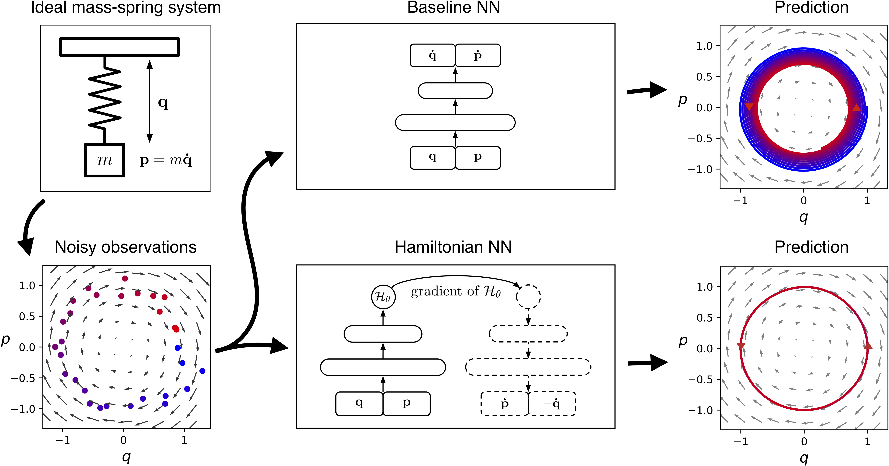
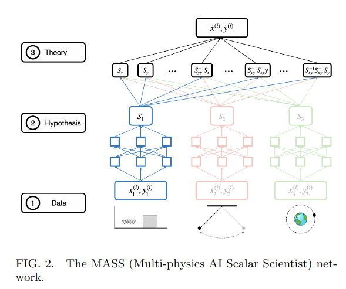

神经网络通过数据学习规律，会学习到什么规律？本文提出了新的神经网络MASS（Multi-physics AI Scalar Scientist）用以学习网络从数据中学到的模型信息。这篇工作属于PINN。
文献： * Do Two AI Scientists Agree? * 源代码GitHub * Hamiltonian Neural Networks * HNN GitHub * Lagrangian Neural Networks * LNN GitHUb
这篇文章主要是模型融合工作，在 PINNs 中有两个经典工作—— Hamiltonian Neural Networks 和 Lagrangian Neural Networks，这两个网络分别基于哈密顿力学和拉格朗日力学构建。适用于处理不同的力学体系。在这两个模型的基础上，作者提出了融合的算法新思路——MASS。
Hamiltonian Neural Networks

传统思路，是将运动轨迹视为时间序列，通过神经网络直接预测之后轨迹。现在减少神经网络的压力，让其预测哈密顿量，通过哈密顿方程更新之后的运动轨迹。如上图所示，模型预测输出为Hθ。
1 | '''NEURAL HAMILTONIAN-STLE VECTOR FIELD''' |
Lagrangian Neural Networks

神经网络直接预测$\ddot{q}$。
MASS

这篇文章的作者构建三种层次的网络，首先将数据处理为特征数据，然后将特征数据进行“理论”处理，得到最后结果。这里所谓“理论”，是网络通过不同例子学习之后得到的能力。
实际上没有脱离最原始堆数据量、寄希望于网络拟合能力的思路，通过混合架构，大量例子通过不同子网络和主要网络（所谓的理论网络）训练，得到最后的拟合能力。